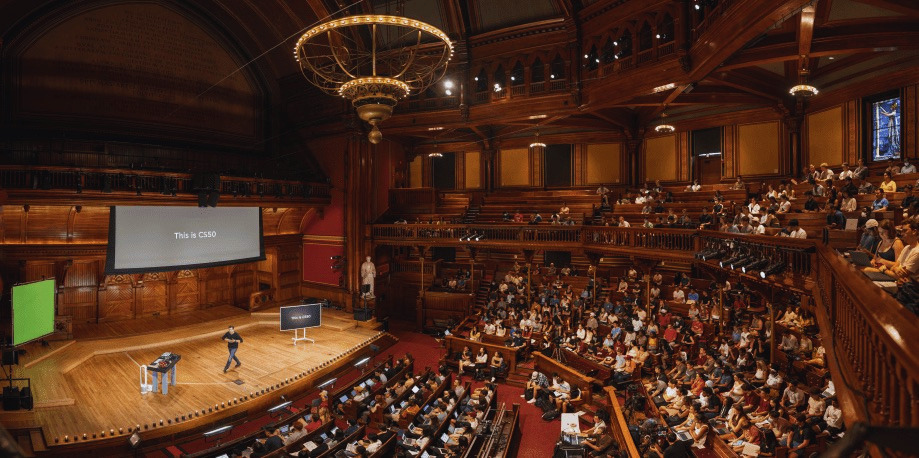
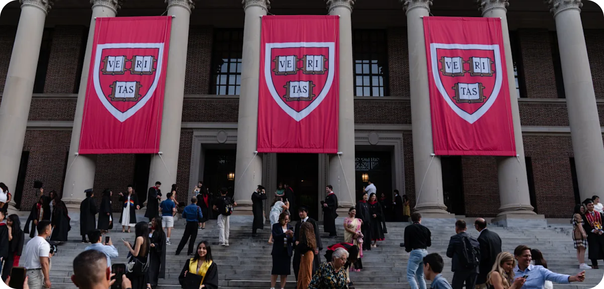

Harvard Introduction to Computer Science
dual informationstechnologie / 2027
Diese Anwendung macht aus meiner Lernroutine überprüfbare Daten: Fokuszeit, Lernkontext und Ausdauer.
Der Plan steht seit 07.2026 fest.


Ursprünglich als Auffrischung gedacht, forderte mich der Kurs weit über den Code hinaus. Die Problem Sets erforderten ein Arbeitsniveau, das erst durch feste Routinen, absolute Konzentration und das Vorab-Planen der Logik mit Stift und Papier möglich wurde
Ursprünglich als Auffrischung gedacht, forderte mich der Kurs weit über den Code hinaus. Die Problem Sets erforderten ein Arbeitsniveau, das erst durch feste Routinen, absolute Konzentration und das Vorab-Planen der Logik mit Stift und Papier möglich wurde
fokuszeit heute
aktive Lernzeit
fokuszeit heute
aktive Lernzeit
fokuszeit heute
aktive Lernzeit